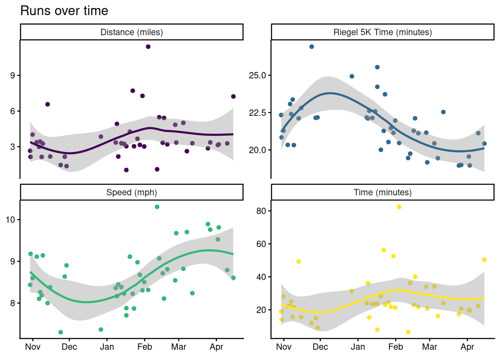
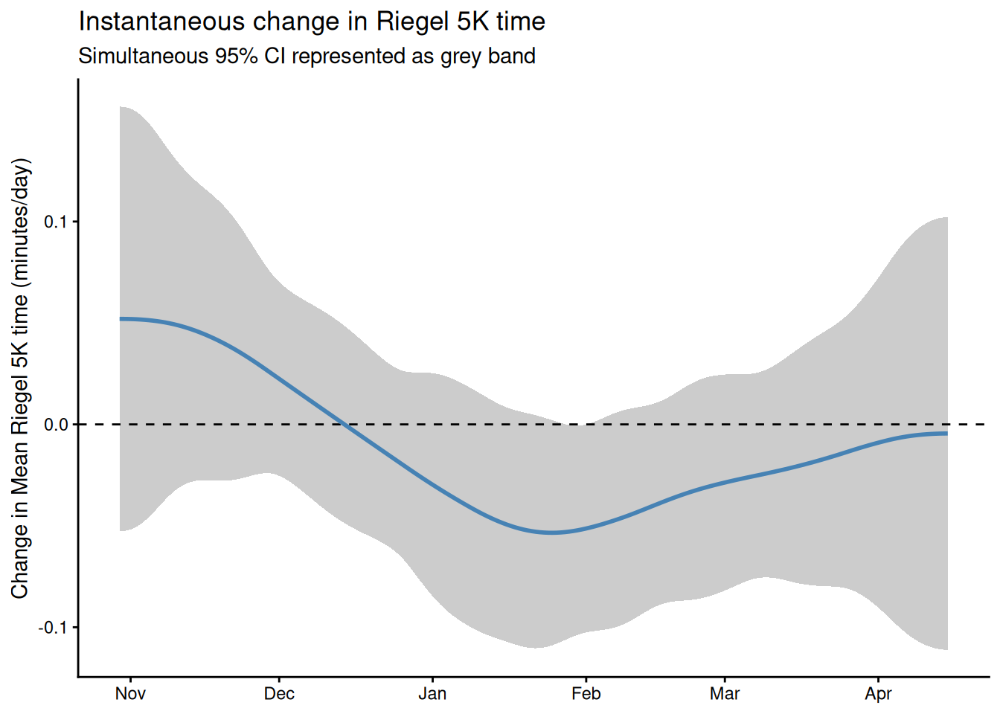

![]()

Runners often vary the distance and intensity of their workouts. In this post I demonstrate how to compare runs of different lengths using Riegel’s formula. The formula accurately describes the trade-off between run distance and average speed for aerobic runs up to about a half-marathon in length. Using my Strava data, I demonstrate how to use Riegel’s formula to measure the difficulty of runs on a standardized scale and briefly investigate how my fitness has changed over time with GAMs.
Riegel’s formula: a measure of running ability
Riegel (1981) proposed that aerobic exercise can be modeled via the power law equation:
\[t = a d^b\]
where \(t\) is the time it takes to travel distance \(d\). Here \(a\) and \(b\) are coefficients that depend on the activity (typically \(a\) and \(b\) are estimated separately for different ages and genders). \(b = 1.06\) is a typical estimate for recreational runners, although \(b\) might be as high as \(1.08\) for elite runners. Using data from over two thousand runners, Vickers and Vertosick (2016) showed that this formula is well-calibrated for runs ranging from one mile to a half-marathon in length. For runs longer than a half marathon, the formula tends be too optimistic.
We can also reformulate the equation to deal with speed rather than time. Letting \(b = 1 + k\) we have:
\[s = {d \over t} = {1 \over a d^k}\]
where \(s\) is speed. We can also estimate the time it takes to complete a run of length \(d_2\) given a run of length \(d_1\) in time \(t_1\) (it’s typical to estimate a Riegel curve based on a single best effort1):
\[t_2 = t_1 \cdot \left(d_2 \over d_1 \right)^b\]
Similarly we can rearrange to calculate speed instead:
\[s_2 = s_1 \cdot \left(d_1 \over d_2 \right)^k\]
Using this equation for a set of distances, we can estimate a curve describing maximal speeds at each distance. For example, my best recent effort was a 5K that I completed in 18:52, which results in the following curve:
Notice the exponential decay in speed with run distance. This plot also includes a visualization of exercise types at various speeds2, using a rough categorization from Strava again based on the 5K effort. The takeaway is that exercise at different intensities and durations uses different muscular mechanisms. The vertical lines mark the region where Riegel’s curve is well calibrated.
Within the aerobic region, we can treat points on the Riegel curve as equally difficult. The entire Riegel curve serves as a measure of fitness, but we can describe the entire curve by choosing a single point to act as a reference. I choose to standardize my runs to their equivalent 5K times.
Data
I record my runs using Strava. Strava can analyze data recorded on a number of devices, but I just run Strava directly on my phone. During a run, Strava records my latitude and longitude once per second. These measurements are typically accurate to within 10 meters. For this analysis I bulk exported my Strava data.
In total I have recordings of 45 runs from November 2017 to April 20183. The trajectory of one of these runs is below:

This is a fairly typical run of mine around Rice’s outer loop4. In addition to plotting individual runs, we can look at how my runs have evolved over time by visualizing some summary statistics for each run:

Changing fitness over time with GAMs
Now I use a Generalized Additive Model to understand how my fitness changes over time, following Simpson (2018). Using mgcv I fit a model of the form:
\[\mathrm{riegel\_5k\_time}_i = f(t_i) + \varepsilon_i \qquad \varepsilon_i \sim \mathrm{Normal}(0, \sigma^2)\] where \(t_i\) is the number of days since my first run and \(f\) is a smooth function. I also fit a model of the same form but with additional continuous autoregressive (1) structure in case there is residual autocorrelation in the time series after fitting the model.
Both models fit the data well, but the CAR(1) structure turns out to be unnecessary. We briefly inspect the original model:
Family: gaussian
Link function: identity
Formula:
riegel_5k_time ~ s(t)
Parametric coefficients:
Estimate Std. Error t value Pr(>|t|)
(Intercept) 21.5884 0.2038 106 <2e-16 ***
---
Signif. codes: 0 '***' 0.001 '**' 0.01 '*' 0.05 '.' 0.1 ' ' 1
Approximate significance of smooth terms:
edf Ref.df F p-value
s(t) 3.183 3.183 9.1 0.000104 ***
---
Signif. codes: 0 '***' 0.001 '**' 0.01 '*' 0.05 '.' 0.1 ' ' 1
R-sq.(adj) = 0.388
Scale est. = 1.8267 n = 45We also plot the fit model:

My estimated fitness passes some sanity checks: (1) I lose fitness over winter break when I’m not working out, (2) toward the end of the spring semester after several months of training, I start to plateau. My fitness should probably be improving in November, when I was training fairly hard, but I had one spectacularly slow long run that that seems to be throwing the estimates off.
What I’m really interested in here is how my fitness changes over time, or the derivative of my smoothed Riegel 5K times. To estimate this, we can draw simulations from the posterior of the GAM, and then approximate the derivative via finite differences. Gavin Simpson’s wonderful gratia package provides this functionality, and we plot the first derivative of the GAM below:

Here we see the same trends as before: losing fitness over winter break, big improvements in January, my first month of serious training, and a plateau towards the end of the semester. Interestingly, my changing in fitness level is never significant. This doesn’t match with my perceived experience, and I attribute this again to measuring mean effort rather than maximal effort. I ran my recovery and long runs at about a 7:30 pace all semester, and really pushed myself only once in every three or four runs. So there’s a lot of runs in there that make it look like I’m not doing much.
Takeaways
Riegel’s formula provides a nice way to standardize runs, and GAMs are a satisfying and interpretable way to investigate how run capacity changes over time. An interesting problem is to model best efforts rather than mean efforts. I’m brainstorming on this at the moment. In a future blog post I’ll show how to efficiently process and tidy Strava GPX files. I’m also curious to replicate Vickers and Vertosick (2016), or to repeat this analysis using Gaussian processes or state space models.
References
Riegel, Peter S. 1981. “Athletic Records and Human Endurance.” American Scientist 69 (3): 285–90. https://www.jstor.org/stable/27850427.
Simpson, Gavin L. 2018. “Modelling Palaeoecological Time Series Using Generalized Additive Models.” bioRxiv. https://doi.org/10.1101/322248.
Vickers, Andrew J, and Emily A Vertosick. 2016. “An Empirical Study of Race Times in Recreational Endurance Runners.” BMC Sports Science, Medicine and Rehabilitation. https://bmcsportsscimedrehabil.biomedcentral.com/articles/10.1186/s13102-016-0052-y.
Footnotes
Wouldn’t it be better to calculate a Riegel curve based on several best efforts? Yes, but people who have multiple recent best times normally race enough that they don’t need to estimate Riegel curves in the first place.↩︎
If you’re interested in this kind of stuff, check out The Lore of Running by Timothy Noakes.↩︎
I stopped running in April after being proscribed Cipro for an infection. Cipro and other fluoroquinolone’s have the side effect of spontaneous tendon rupture for up to 6 months after use, although most of the risk is in the first month after usage. Achilles tendons are at the highest risk. If you run, ask to be put on another medication!↩︎
Houston is totally flat so I ignore the effect of hills on my runs. If you live in a hilly place you probably want to use a grade adjusted speed. Here’s a post by the Strava team on calculating grade adjusted pace, although it’s not enough to recreate their calculation. References to literature on an established way to do this appreciated.↩︎